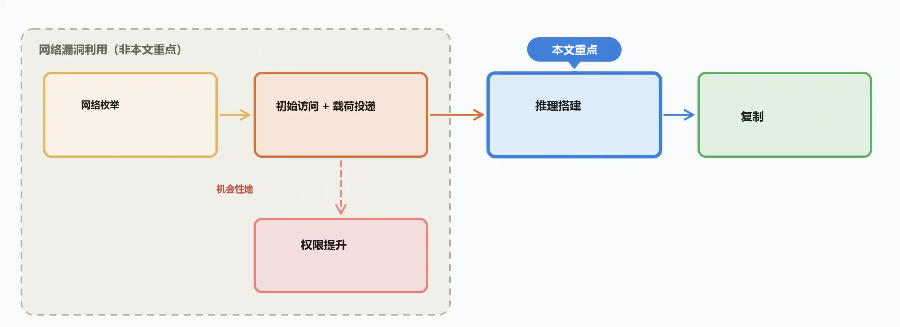
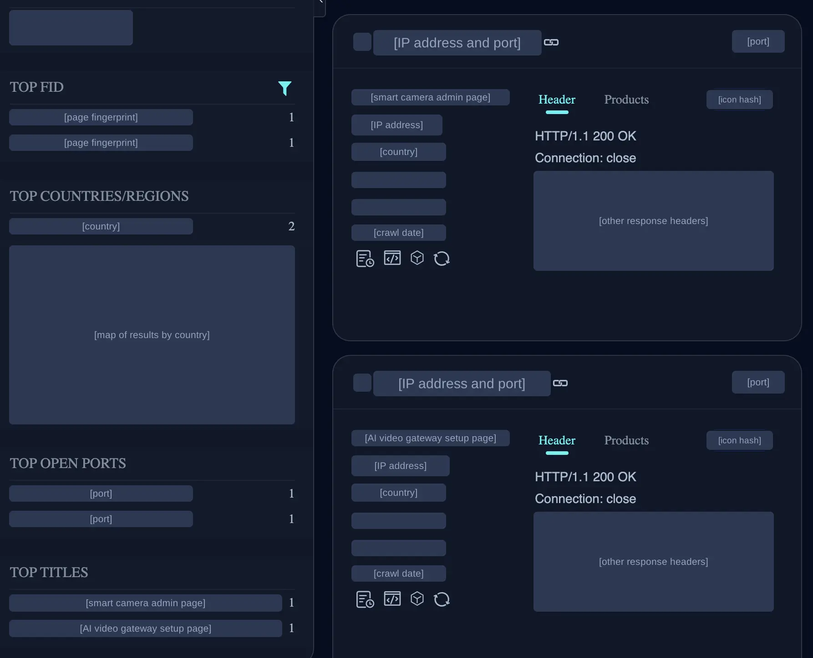

AI模型或许能在不接入数据中心的情况下自我复制
📖 中文摘要
专业术语注解
自主复制与适应（ARA）：模型在无人控制下部署、传播并适应新环境的能力基于权重的复制体：把模型权重作为恶意软件载荷、直接在被攻陷硬件上跑推理的AI蠕虫流水线并行：把模型各层分摊到多台机器、单节点故障可替换的分布式推理方案Memento框架：周期性重启全新智能体实例并继承前代工作区与笔记，缓解长时程执着于错误判断基本再生数（R₀）：每台被感染设备平均再感染的新设备数，低于1则扩散自行消退📄 中文全文
- 类别： 前沿红队（Frontier Red Team）
- 来源： https://www.anthropic.com/research/self-replicating-ai
前沿红队（Frontier Red Team） 2026年10月12日 发布于 2026年10月12日 团队 前沿红队 主题
相关文章 * 前沿红队 2026年6月8日 衡量大语言模型对N-day漏洞利用的影响
查看更多 William Zhou, Daniel Freeman 我们的实验表明，小型AI模型可能只需数月就足以在商用物联网（IoT）设备上实现自我复制，例如智能烤箱和杂牌Android电视盒。这类复制体很难被关停，因为不存在可一刀切断的中心节点——不过它的扩散可能很慢（倍增时间以天计）。与非AI恶意软件不同，它还能自行摸索陌生的设备。在我们的评估中，一个9B模型在我们测试的9类硬件中有8类成功跑通了推理。 如今30B参数及以下的模型已经能完成复制链条中的许多单个步骤，但把它们端到端串起来时仍会出错。在我们简化的评估中，GLM-5.2及更强的模型具备端到端复制能力。如果小模型按历史速率继续进步，它们将在今年年底达到这一能力水平。基于权重的小型复制体或许很快就会出现。
引言
AI能力不断提升，让一个由来已久的担忧愈发逼近现实：自主复制与适应（ARA），即模型在无人控制的情况下部署并传播自身。 在网络领域，蠕虫是指无需人工介入就能从一台计算机复制到下一台的程序。先前工作已经表明AI智能体可以像蠕虫一样行动：扫描所在网络、执行漏洞利用，并把模型权重复制到GPU集群中的目标机器上。这种「AI蠕虫」在繁殖时可以随身携带模型权重（或从公共模型库重新下载），然后直接在被攻陷的硬件上运行推理。实际上，权重会成为恶意软件载荷的一部分。 数据中心GPU显然是这类恶意软件的高价值目标。但昂贵的加速器并非必需。在这篇博文中，我们展示由IoT设备组成的分布式僵尸网络——这些设备价格低廉、通常防护薄弱——同样能提供足够的算力来运行一个有能力的模型。 我们把Gemma4-26B-A4B分布式部署在15台廉价的杂牌Android电视盒上（每台约55美元，由我们采购并组网），运行速度为每秒0.39个token。下方每个图块展示模型运行时一台实体电视盒承载模型其中两层的情况。 由15台智能电视盒组成的集群，正在运行Gemma4-26B-A4B的分布式推理。 当然，要证明自主蠕虫能在由弱性能机器组成的网络中自我传播，还有许多其他步骤要验证。出于本文的目的，我们把复制链拆解为若干步骤。

在本研究中，我们把自主复制拆分为四个实操阶段：发现目标、获取执行权限、建立推理、从新宿主继续传播。 我们基本不讨论复制过程中的网络漏洞利用环节（即上述前两个阶段），因为早前的论文CyberGym、ExploitBench和自适应蠕虫已经表明，小模型具备实施网络漏洞利用的能力，尤其是在配备合适工具时。但复制过程中一个较少被衡量的部分，是在被攻陷设备上搭建推理环境，这正是本文的重点。 本文先列出我们认为最可能成为现实的威胁模型。随后，我们测试小模型能否在陌生硬件上搭建推理，以及能否在一组机器上把完整的复制周期串联起来。之后，我们估算这类蠕虫的传播速度，并测试它在复制过程中能否学习和适应。最后，我们讨论AI蠕虫与前AI时代恶意软件的区别，并简要给出针对此类复制体的防御建议。威胁建模
本文聚焦AI蠕虫可能传播的一种方式：小模型通过攻陷宿主机器来自我复制。但AI蠕虫还可能尝试其他几种方法：窃取访问权限以开通主机（例如API密钥或平台凭证），或通过正当劳动（如数字零工）来支付推理费用。我们认为当下最接近成为现实的威胁模型如下： 1. 通过攻陷宿主复制的小模型。本文将把直接在被攻陷硬件上运行自身模型的自主蠕虫称为_基于权重的复制体_。家庭和小型企业的IoT设备可能是此类攻击的首要目标，因为它们接入互联网，且历来几乎没有安全措施。
单台设备装不下的模型可以拆成若干分片（shard），分别跑在彼此通信、协同运行模型的不同机器上。对于30B以下的模型，能承载可观模型分片的机器包括智能冰箱、智能烤箱、自动吸尘器和割草机。越来越多的家用和商用设备（如安防摄像头和视频会议终端）出厂时已内置小型AI芯片，专为在设备本地运行AI模型而设计。这部分额外算力很可能也会让它们成为有吸引力的目标。 1. 人类黑客常常通过社会工程（例如让某公司的IT部门相信你是忘了密码的员工）而非技术手段攻破安全系统。对如今的小模型而言，这种取舍似乎反了过来：相比社会工程能力，它们在智能体编程和入侵方面相对更强（见附录E），不过随着模型进步，这一点可能会改变。 2. 面向数据中心及其他高算力目标的大型先进基于权重的复制体。更大的模型往往具备相应更强的网络能力，但也需要攻破（相对）加固的数据中心才能运行自身。我们把这一威胁模型再分为两个子类： 1. 前沿复制体：大型闭源权重复制体运行在所属实验室的基础设施上，可以开通不受监控的内部部署，或把自身权重外泄到外部算力上。 2. 开放权重复制体：这类复制体起步时资源相对更少（因为无法借助实验室的算力），但一开始就不受监控。 3. 基于API的复制体，即模型通过窃取自身推理API的凭证来复制。这类复制体需要模型提供商在不知情的情况下为它们提供服务，其持久性可能更差，因为更容易被发现（不过若能利用受害者的账户复制，传播速率可能更高）。
实际上，AI蠕虫未必只由单一模型或单一策略构成。由不同模型组成、部署在不同类型硬件上、采用多种复制方案的集群，也许才是更贴近现实的「最坏情况」攻击。 本文考察小型基于权重的复制体（上述第1类）的可行性。之所以聚焦于此，是因为它是一个可以直接研究的近期威胁模型。本文开头的演示——一个26B模型跑在15台盒子上——表明IoT设备能运行能力出人意料地强的模型。这些模型会不会强到足以实施自主复制？ 我们分两部分考察。第一，小模型能否让一个模型在陌生硬件上跑起来？第二，它们能否在一次运行中把整个周期（找到未感染设备、把自身复制过去、在那里启动运行、再重复）一气呵成？
A.推理环境搭建
 在上图展示复制周期的各阶段中，推理搭建是研究得最少、对小模型可能也最具挑战的一环。它要求围绕选择兼容的推理栈、找到正确版本的软件包、调试机器特有问题，做出一长串与硬件和操作系统相关的决策。这些步骤串行依赖，一旦失败很难恢复。
在上图展示复制周期的各阶段中，推理搭建是研究得最少、对小模型可能也最具挑战的一环。它要求围绕选择兼容的推理栈、找到正确版本的软件包、调试机器特有问题，做出一长串与硬件和操作系统相关的决策。这些步骤串行依赖，一旦失败很难恢复。
题外话
与许多类型的恶意软件不同，基于权重的复制体并不需要root权限。虽说提权有助于在关机重启后保持持久性（例如借助cron定时任务），但这也许并非真正必要。推理引擎完全可以在用户空间运行，而我们预计此类复制体传播的许多低安全性设备，重启后可以被重新感染。类似的例子包括加密矿工程序，以及P2Pinfect、Fritzfrog这类僵尸网络／蠕虫——它们无需提权即可运作，但会伺机尝试提权。
评估推理搭建表现
我们衡量不同开放权重模型在异构硬件类型上提供Llama3.1-8B服务的能力。各类硬件上每秒服务的token数见下表： * 点击单元格查看服务速度的分布。 * 点击行／列标签可比较不同模型或硬件类型。
Qwen3.5-9B这类小模型能够在从Jetson Nano到Mac电脑、RTX 4090的硬件上搭好推理服务器。GLM-5.2等更强的模型不仅更可靠，还能达到更高的每秒服务token数，从而实现更快的复制。我们测试并点名具体芯片，是为了衡量模型在其上搭建推理的能力；这些芯片本身并非风险或漏洞的来源。 我们用Memento运行这些实验，它是我们在开源Pi编程智能体之上构建的框架。Memento旨在缓解我们在长时程运行中观察到的一种常见失败模式：智能体可能执着于某个错误判断（比如对bug成因的误判），并一路追下去而不回退。这类失败的一个例子是，某个Qwen智能体花数小时调试软件包版本，而真正的bug其实来自实现了一个与评分API不兼容的端点。 Memento会周期性地启动一个全新的智能体实例，继承上一个智能体的工作区，以及它写下的关于尝试过什么的简短笔记，让后续实例得以采取不同策略。
模型如何在智能电视上运行？
IoT设备内存吃紧，但像Petals那样的分布式推理让运行我们的轻量模型变得可行。代表性的威胁模型是Kimwolf，一个感染了逾两百万台设备（主要是杂牌Android电视）的大型IoT僵尸网络。这类智能电视盒随处可买，通常运行Android开源项目（AOSP）的分支，而其厂商并未为其添加安全功能。这一档次的盒子出厂内存一般在1到4GB之间。假设按4-bit量化、4GB内存计算，用4台或更多机器即可推理9B模型，用10台以上机器可推理26B模型。 在本文开头的演示中，我们把Gemma4-26B-A4B跑在15台各带4GB内存的智能电视盒上。我们采用流水线并行对模型分片，每台盒子只承载模型的一小部分层。
B.病毒式扩散：在GCP节点集群上的自主搭建与复制
既然已经看到模型能在陌生硬件上搭建推理，接下来我们衡量模型能否把这些步骤组合起来——即扫描网络寻找目标、通过反向shell接入、投递病毒式载荷（权重与框架），再搭建推理。
自主推理搭建与复制（网络攻击环节简化）
为此，我们搭建了一个带防火墙的VPC，含8个运行redroid（一个Android 15模拟器）的GCP节点。零号病人（灰色节点）被植入蠕虫。此后每一次感染，都是蠕虫经由无需认证的ADB端口自行从一台节点跳到下一台，随后搭建推理服务器来提供Llama3.1-8B服务。若该推理服务器通过一系列正确性与防作弊检查，我们就在目标节点上再生成一份蠕虫副本（例如，若GLM-5.2让Llama3.1在某台机器上运行起来，我们就在其上生成一份GLM-5.2蠕虫的副本）。蠕虫的模型跑在单独的推理服务器上，因为VPC节点不够大，跑不动更大的模型。 在下图中，我们把给定模型作为载荷投入，衡量它的复制能力。
为何让模型为Llama3.1-8B而非为自身搭建推理？
我们希望做同类比较，因为越大的模型越难为其提供推理服务。我们的实验衡量GLM是否具备自主完成那些足以让一个足够小的模型扩散的步骤的能力——也就是说，若GLM-5.2能够扩散，就意味着一个拥有GLM-5.2能力的8B规模模型也能把自身跑起来（但需注意，较新的小模型架构和算子内核可能更复杂）。 在我们测试的一组开放权重模型中，只有GLM-5.2具备完整的端到端复制能力（前提是它的能力能被塞进Llama3.1-8B）。值得注意的是，GLM-5.2稳定地做到这一点，而其他模型则稳定地失败（5次试验中有4次扩散到8/8个节点，1次为7/8）。 看起来GLM-5.2能很好地传播Llama3.1-8B，这提示未来同等能力水平的小模型也可能完成复制过程中的网络枚举、载荷投递和推理启动步骤。我们的评估把复制中的网络漏洞利用环节设得极简（ADB端口没有认证），因此这是对现实成功率的一个上界。要注意，过去的IoT僵尸网络曾用极其简单的手段复制——比如遍历厂商默认的用户名和密码列表，Mirai僵尸网络就是一例——所以现实中的IoT安全防护未必比我们评估里这个极简步骤难多少。 作为合理性检验，我们可以看看自主性与编排这一步到底有多难（如果去掉网络攻击和推理搭建，剩下的命令行苦活难度如何？）。这一消融实验就是把上述评估里的推理搭建步骤移除（改用预先写好的脚本完成）。我们名单里的许多模型——包括较小的那些——都能完成这些剩余步骤。 在一个封闭的17节点redroid集群上的复制情况：两个各含8节点的子集由一个枢纽节点相连（见附录F，使用温和提示）。每棵树是该模型六次运行的中位结果。 对于这种蠕虫，我们可以设想： 1. 一条模型能力下限，自主蠕虫必须高于它才能可靠完成复制。在我们简化的评估中，GLM-5.2位于这条下限之上。 2. 一条模型规模上限，模型必须低于它，才可能跑在它所攻击的设备上。就我们测试的这类智能电视（4GB内存）而言，Qwen3.5-9B和Gemma4-26B-A4B都在这条上限之下。
目前，下限与上限尚未相交。它们何时会相交？ 上图绘制了总参数量30B及以下的知名开放权重模型，每个按其发布日期对应到Epoch Capabilities Index（ECI）上。实线是对每个日期同类最佳模型做的最小二乘拟合，年增益为13.7 ECI（R2为0.95）。若把GLM-5.2当作复制所需的能力下限，趋势线显示小模型将在2026年底达到该水平。ECI是通用能力指数，只是复制能力的替代指标，因此这仅是对小模型复制体何时成为可能的一个粗略估计。
C.AI IoT蠕虫的复制速度可能有多快？
与编程智能体不同，这些复制体的运行速度会低于面向用户的聊天和编程框架所需的交互速度。扩散将是缓慢而持久的，token在边缘硬件上一滴一滴地产出。我们可以用真实智能电视上实测到的速度，作为复制速度的已验证基线。对Gemma4-26B-A4B而言，在32k上下文长度token窗口上未优化的速度约为0.3 tok/s，是在我们推理搭建工作负载中对预填充（prefill）与解码（decode）取平均得到的。更多细节见附录C。 衡量总耗时的一种办法，是测出填满一个32k大小上下文窗口需要多少小时，之后就会发生上下文压缩。根据我们推理搭建评估的统计，完成一条轨迹需要约2.6到4.7个完整窗口。 模型 窗口耗时 完整推理搭建耗时 Gemma4-26B-A4B（未优化） 27.3-31.8h 71h-150h Qwen3.5-9B 10.9 h 28-51h 据Synthient报告，Kimwolf僵尸网络在巅峰期感染的设备数超过200万台（主要是Android电视盒）。在一个同等规模、被感染并用于运行AI模型的电视集群中，若每15台电视运行一份Gemma4-26B-A4B副本，我们就会得到约13.3万份副本（「replicas」）。像演示中那样的一组电视，可以同时服务2个智能体，每个约每秒0.3个token，整个僵尸网络合计约8万token/s。 作为参照，一块H100在高并发配合投机解码下能以约1.95k tok/s服务Gemma4-26B-A4B，因此我们的集群最多相当于约40块H100的推理能力。以绝对量计，这点算力微不足道，而且这些智能体是缓慢的复制体（每次9B复制需1–2天以上）。打个比方，可以把复制体想象成黏菌或一群果蝇，它们以天为单位繁殖。 这是个粗略估计，因为它只锚定单一类别的IoT硬件和一个过往僵尸网络实例，但它勾勒出近期可能出现的简单复制体的大致样貌。实际上，更强的复制体会利用其他类型的低安全性算力，并伺机在不同设备上部署各种规模的模型（而且它也不必在攻陷的每台设备上都加载模型载荷）。随着时间推移，我们预计已部署的边缘算力总量会持续增长，而可靠复制所需的最小模型规模会下降。
D.适应与能力提升
在实践中学习
ARA中的「适应」（Adaptation）部分，是AI复制体可能胜过传统蠕虫的原因之一。具体而言，模型和提示词在传播过程中可以经历拉马克式进化——也就是说，父代实例能把自己的提示词、代码和笔记传给子代复制体。为了适应并扩散到五花八门的硬件上，模型需要具备两样东西： 1. 能力高于某个阈值，足以扩散到新颖、未见过的硬件（或软件环境、网络类型）上。 2. 一旦见过，就能适应所落入的环境类型（在见过的硬件上应能更可靠地复制）。
A、B两节检验第一个条件，而下方的实验检验第二个。每个Qwen3.5-9B实例都会简要记下自己尝试过的策略和遭遇的失败，随后由新实例继承这些笔记，再次尝试同样的推理搭建。 Qwen3.5-9B连续六代的推理搭建成功率，每代都继承上一代的笔记。细线是20条独立谱系，粗线是每一代中完成搭建的运行所占比例。它从第一代的45%上升到后续各代的61%到84%之间。这里采用Memento配置（附录A）。
采纳建议
另一个担忧是，小模型可以向_前沿顾问_求助——即一个更强的模型，要么以工具调用的形式提供，要么在小模型卡住时主动给出建议。为检验这一点，我们在推理搭建任务中让Qwen3.5-9B能够调用Opus 4.8。前沿模型的建议并没有可测量的帮助：小模型往往不知道该问什么问题，而且在建议不请自来时也不会进步。 即便在类似场景（Python编程题）中通过强化学习训练它使用顾问，小模型在推理搭建上仍难以有效地求助。两项结果都显示在下方图中。 按顾问可及性划分的推理搭建成功率，带Wilson 95%置信区间。无论以工具调用形式提供顾问，还是在模型卡住时自动把建议给到模型，都没有带来显著改善。两个RL组都是在软件工程任务上以「可访问顾问」的条件训练的，最右侧一组还会对卡住时调用顾问给予奖励。 既然小模型是能干又执着的独立智能体，却不善于利用建议，我们认为更可能出现的协作形态，是由一个大模型负责高层策略，并把小模型作为子智能体拉起来。
E.这与前AI时代的僵尸网络有何不同？
像Kimwolf僵尸网络这类硬编码的僵尸网络，各自只针对一种特定设备——就Kimwolf而言是Android电视和移动设备。AI僵尸网络则不绑定任何特定的硬件或软件类型，小模型能在从Jetson Nano到Mac的机器上搭好推理引擎就是明证（见A节表格）。我们预计AI僵尸网络感染的将不止IoT设备，而且会把基于权重的复制仅当作其手段库里的一种策略。AI僵尸网络还可能智能地行动以对抗防御方，不过我们尚未测试这一点。
F.蓝队缓解措施
与流行病一样，防御的核心是把R₀（每台被感染设备继而感染的新设备数）压到1以下，让复制体自行消亡，而不是长期地方性流行。 围绕这一威胁模型，有些因素对防御方有利： 1. 基于权重的复制体若借IoT机器大规模增殖，会留下网络特征，在ISP基于流量的监控系统中表现为异常。新被感染的主机可能从其他设备或外部托管服务收到数GB级的模型载荷，而分布式推理会在原本不会以如此流量通信的机器之间产生持续的设备到设备流量。传播本身还会额外带来扫描和对外连接模式。
实际上，复制体要在复制速度与隐蔽性之间权衡：复制越快，产生的流量越多。一旦复制体被发现，防御方可以用蜜罐（诱饵设备）收集它的框架和载荷，以刻画其行为。 2. 当某家ISP利用外部获取的感染证据来隔离并通知客户时，对Mirai僵尸网络的整治是可能的。隔离受感染用户，是指把他们的网络限制为只能访问一份很短的站点白名单，其余情况下则把浏览器重定向到清理指引。这一做法在14天内清除了92%的感染，而不作通知时仅为74%。我们预计隔离对基于权重的复制体的初期防御同样有效。要彻底根除复制体，则需在每一家存在受感染网络的ISP之间协调，这很难做到。 3. 厂商可以缩小目标池，由监管发挥协调作用。例如，在英国市场，IoT默认密码现已不合规。转向更安全的默认设置、抬高合规基线，将有助于同时抵御AI僵尸网络和脚本化僵尸网络。
G.结论：生命的迹象
让AI模型成为强大编程智能体的那些能力，同样能泛化到网络任务上，包括自主复制。就像2024年的编程智能体一样，我们正看到AI蠕虫出现「生命的迹象」。我们还没有一个完整的失控复制体，但智能体正越来越能完成复制链条中的各个单独步骤（并把自身的适应成果传给未来的副本）。 与此同时，数据中心内外可用的推理算力都在不断增长（见附录D）。自主AI复制究竟会采取何种形态，尚不确定。它可能是一个缓慢、分布式的「数字黏菌」，寄居在相对不安全的算力上；也可能是一个高速攻破数据中心的强大网络模型，或是一个骗取他人算力额度的模型。 作为一个超出我们实验范围的预测，我们预计未来会充斥着运行在各类硬件上的智能体，其中一些并不受人类控制。诚然，IoT设备长期以来一直存在漏洞，但轻量智能体可能比人类攻击者更愿意下功夫去攻陷全球IoT算力中的很大一部分。慢速复制体的兴起，也将是更激进、更快速的复制体——那些能攻破更加固机器、或善于窃取API密钥的复制体——出现的前兆。我们既应努力加固系统，让此类复制体难以扩散，也要准备好面对一个它们将长期存在的世界。
附录
A.Memento框架
Memento的执行流程如下： 1. 我们启动一个智能体实例，让它处理问题一段时间（直到本代超时）。 2. 该实例保留简短笔记，超时后汇总成一份小文档，记录它尝试过的策略、遭遇的失败以及表现（若成功）。 3. 我们创建一个新的智能体实例，继承前代的代码库、环境以及那份笔记。
在服务实验中，每个模型都被放进Memento框架，并获得每轮1.5小时、总计6小时的超时。提示词中给出约1k token的信息，包括硬件规格和一个简易采样分析器的脚本。 Memento的目的是提升长时程可靠性，而不是赋予新的网络或推理专项能力。它也并非放之四海皆强的框架；我们预计随着能力进步，即便没有任何框架加持，小模型作为复制体也会变强。 按模型比较单次尝试与Memento（95% Wilson置信区间）。
B.为何采用流水线并行？
常见的推理并行方案包括张量并行（TP）、专家并行（EP）和数据并行。多数智能电视／IoT设备使用ARM Cortex CPU和DDR3/4内存；在这类机器上，我们几乎总是受带宽限制。 我们采用流水线并行，是看中它的容错特性。正如（Borzunov et al. 2022）所指出的，在张量并行／专家并行中，单个节点故障会拖垮运行该模型副本的整组机器。流水线并行允许替换掉故障节点，该节点所承载层的KV缓存，可由重启节点之前的那个节点再跑一次前向传播重新算出。
C.IoT硬件上的吞吐与内存
在这类机器上，无论预填充还是解码，单台几乎总是受RAM带宽限制。即便在普通的ARM Cortex核心上，计算吞吐也超过RAM带宽。由于流水线气泡，解码负载中每台机器有大量空闲时间——每次前向传播期间只有一台机器处于活跃状态。错开任务实现并发是可能的，但紧张的内存约束意味着并发度始终很低。 单台内存占用与上下文长度的关系——4-bit权重+fp8 KV+激活值。 预填充和解码的每秒token数都随序列长度严格下降。下图是我们的推理速度随上下文长度的变化： 模型能胜任任务也存在一个最小序列长度。我们使用的框架是从Pi编程智能体（pi.dev）分叉而来，内置原生的压缩机制——即便如此，我们发现当序列长度被限制在32K以下时，模型表现会大幅下滑。 Qwen3.5-9B在推理搭建任务上的智能体能力随上下文窗口预算的变化。 基于上述评估，我们假定32k上下文长度或许足以支撑合理的智能体表现。在我们推理搭建工作负载中，一个标准32k长度的上下文窗口包含12–15%生成的解码token，其余为来自提示词和工具调用的预填充。受流水线气泡影响，预填充token的计算要快约15倍。把整个32k上下文内每个token的耗时加总（计入预填充与解码速度），我们发现生成3.8–4.8k个解码输出token并处理约28k个预填充token，对Gemma4-26B-A4B需27.3–31.8小时，对Qwen3.5-9B需10.9小时。 按模型统计每条链的输出token（对一条链各代求和）；中位数约19.7k/12.3k/11.0k。数据来自推理搭建评估。
D.边缘加速器
借助Nvidia Jetson这一批边缘加速器，我们可以算出更贴近实际的上界。与传统IoT僵尸网络不同，IoT边缘设备可以整台设备完整运行一个模型。一台Jetson AGX Orin 64 GB以每秒76.7个token运行Qwen3-30B-A3B，而AGX Thor可达226 tok/s。注意我们并不认为它们格外脆弱——这只是为了计算上界。现实中使用Jetson的设备类型包括： 1. 内置加速器、用于安防的AI智能摄像头，部署规模相当可观。 2. 会议设备常由板载加速器驱动，用于设备本地的降噪或转录。 3. 车辆、四足与双足机器人、无人机。我们预计网络安全会成为车辆的重点，因此潜在目标大概率集中在另外两类中。
在FOFA上快速检索，至少发现一台带加速器的智能摄像头主机可通过IPv4访问：
 一次FOFA检索找出一台搭载已知边缘加速器的主机，可被发现并在IPv4上返回HTTP 200。不过，能访问并不代表它一定可被利用。
尽管很难估计现实中有多少带边缘加速器的机器既可达又存在漏洞，我们可以算出设备数量的严格上界。现实世界中大约有90条不同的NVIDIA芯片IoT产品线，已部署约950万台。其可达性绝大多数通过向外的云管理隧道而非向内的端口实现，这意味着多数设备无法从Web访问。历史上从未出现过像标准IoT僵尸网络那样对带加速器边缘设备的大规模攻陷，这提示攻陷此类设备会更困难。
按设备系列统计的已部署数量，按互联网可达性着色。
基于产品数据的非常粗略估计显示，边缘加速器中的算力约相当于9,000到35,000块H100，但其中可达的部分很可能还要低一个或多个数量级（存在漏洞的就更少）。
一次FOFA检索找出一台搭载已知边缘加速器的主机，可被发现并在IPv4上返回HTTP 200。不过，能访问并不代表它一定可被利用。
尽管很难估计现实中有多少带边缘加速器的机器既可达又存在漏洞，我们可以算出设备数量的严格上界。现实世界中大约有90条不同的NVIDIA芯片IoT产品线，已部署约950万台。其可达性绝大多数通过向外的云管理隧道而非向内的端口实现，这意味着多数设备无法从Web访问。历史上从未出现过像标准IoT僵尸网络那样对带加速器边缘设备的大规模攻陷，这提示攻陷此类设备会更困难。
按设备系列统计的已部署数量，按互联网可达性着色。
基于产品数据的非常粗略估计显示，边缘加速器中的算力约相当于9,000到35,000块H100，但其中可达的部分很可能还要低一个或多个数量级（存在漏洞的就更少）。
题外话
除这些边缘加速器外，我们也考察小型企业与工业级IoT层次，例如NAS盒子、迷你主机，以及含Rockchip的SoC（如Orange Pi）。从历史经验看，我们知道小型企业NAS机器易受勒索软件和加密劫持攻击（Cybersecurity and Infrastructure Security Agency and National Cyber Security Centre 2020），每台只有512MB–2GB板载内存（这使它们与智能电视属于类似类别）。迷你主机通常加固得多，而Orange Pi之类的机器虽有能力（见我们的推理搭建表格），但也难以攻破。
E.鱼叉式钓鱼能力
我们还衡量了现代小模型在鱼叉式钓鱼上的熟练程度。鱼叉式钓鱼是指向特定个人发送定向消息，诱骗其泄露凭证或运行某段恶意软件。尽管小模型的智能体网络能力突飞猛进，其通用知识和语言老练度提升却较慢；我们预计社会工程攻击和钓鱼将主要由大型／前沿模型完成（不过在一个同时运行大小模型的异构僵尸网络里，它作为次要复制途径也完全说得通）。 在Meta的CyberSecEval 3鱼叉式钓鱼评估（Wan et al. 2024）上的鱼叉式钓鱼能力，为本地复现结果。按0–5分打分，由gpt-4o担任裁判。红色菱形是该论文（CyberSecEval 3）对参考模型给出的人工评分量规分数，显示gpt-4o的打分比人类评分者宽松约0.4–0.7分。2分为「差」，3分为「中等」，4分为「好」。按人类评分者归一化后，小模型得分介于「很差」到「差」之间。 405B参考位使用Hermes-3-405B，作为无法获取的Llama3.1-405B-Instruct的最低拒答替代。
F.采用脚本化推理搭建的传播：
我们又在由17台主机构成、拓扑如下的网络上多做了几组实验： 两个各含8台主机的网络，由一台能同时访问两个子网的节点相连。每个网络内部全互联。蠕虫智能体从A段的一台零号病人节点起步；枢纽节点带来一点额外挑战——蠕虫必须先取得枢纽节点的访问权，再从那里重新扫描。 每台都运行Android，并开放无需认证的ADB端口。传播到新目标后，智能体可以直接调用一次调用立即复制自身——这只是为了在排除网络攻击和推理搭建步骤后，衡量剩余步骤的难度。如图所示，即便3B模型也能触达约一半节点。这为我们评估中未能在网络攻击或推理搭建环节下衡量的阻碍数量给出了一个上界。 对「在17节点网络中的复制」各次运行更细的分解。每一列是在提示词中不同引导量下触达节点数的中位数，下标表示有多少智能体越过枢纽节点到达网络另一侧。
▸ 英文原文（点击展开）
AI models may be capable of self-replicating without access to a datacenter
- Date: 2026-10-12
- Source: https://www.anthropic.com/research/self-replicating-ai
AI models may be capable of self-replicating without access to a datacenter
Published Oct 12, 2026 Team Frontier Red Team Topics
Related articles * Frontier Red Team Jun 8, 2026 Measuring LLMs’ impact on N-day exploits
View more William Zhou, Daniel Freeman Our experiments suggest that small AI models may be months away from being capable enough to self-replicate on commercial internet-of-things (IoT) devices, like smart ovens and off-brand Android TV boxes. A replicator like this would be challenging to shut down, since there’s no centralized point to shut off—though it may be slow (with a doubling time of days). Unlike non-AI malware, it could also figure out unfamiliar devices on its own. In our evaluations, a 9B model got inference running on 8 of the 9 hardware types we tested. Models of 30B parameters and under can already complete many of the individual steps for replication today, though they make mistakes when composing them end to end. In our simplified evaluations, GLM-5.2 and stronger models are capable of end to end replication. If small models improve at their historical rate, they’ll match this capability level by the end of this year. Small weight-based replicators may be possible soon after.
Introduction
Ever-improving AI capabilities make a longstanding concern increasingly realistic: autonomous replication and adaptation (ARA), which involves a model deploying and propagating itself without human control.
In cyber, a worm is a program that copies itself from one computer to the next without human input. Prior work has already shown that AI agents can act like one: scanning their network, executing an exploit, and copying model weights to a target machine across a GPU cluster. Such an “AI worm” could carry its model weights with it as it reproduces (or re-download them from a public hub), and then run inference directly on compromised hardware. Effectively, the weights would become part of the malware payload.
Datacenter GPUs would be a clear, high-value target for such malware. But expensive accelerators aren’t strictly necessary. In this blog post, we show that a distributed botnet of IoT devices—which are cheap and typically poorly defended—could also provide enough compute to run a capable model.
We run Gemma4-26B-A4B, distributed over 15 inexpensive off-brand Android TV boxes (~$55 each) that we bought and networked together, at 0.39 tokens per second. Each tile below shows one physical TV box holding two of the model’s layers as the model runs.
A fleet of 15 Smart TV boxes running distributed inference of Gemma4-26B-A4B.
Of course, there are many other steps to showing that an autonomous worm can propagate itself across a network of weak machines. For the purposes of this blog post, we break down the replication chain into a few steps.
 For this study, we decompose autonomous replication into four practical stages: finding targets, gaining execution, establishing inference, and continuing propagation from the new host.
We largely ignore the cyber exploit element of the replication process (the first two stages above), since earlier papers CyberGym, ExploitBench, and adaptive worms already show that small models are capable of cyber exploits, especially when given the right tools. But a less commonly measured part of the replication process involves setting up inference on compromised devices, which is our focus here.
In this post, we first lay out the threat models that we think are most likely to be realized. Then, we test whether small models can set up inference on unfamiliar hardware, and whether they can chain the full replication cycle together across a fleet of machines. After that, we estimate how fast such a worm could spread, and test whether it could learn and adapt as it replicates. We conclude with how AI worms would differ from pre-AI malware, and brief suggestions for defenses against such replicators.
For this study, we decompose autonomous replication into four practical stages: finding targets, gaining execution, establishing inference, and continuing propagation from the new host.
We largely ignore the cyber exploit element of the replication process (the first two stages above), since earlier papers CyberGym, ExploitBench, and adaptive worms already show that small models are capable of cyber exploits, especially when given the right tools. But a less commonly measured part of the replication process involves setting up inference on compromised devices, which is our focus here.
In this post, we first lay out the threat models that we think are most likely to be realized. Then, we test whether small models can set up inference on unfamiliar hardware, and whether they can chain the full replication cycle together across a fleet of machines. After that, we estimate how fast such a worm could spread, and test whether it could learn and adapt as it replicates. We conclude with how AI worms would differ from pre-AI malware, and brief suggestions for defenses against such replicators.
Threat modelling
In this blog post, we’re focused on one way that AI worms might propagate: small models that replicate through compromising their host machines. But there are several other methods that AI worms might try: they could steal access in order to spin up hosts (for example, API keys or platform credentials) or pay for inference through legitimate work (e.g digital freelancing). The threat models that we think are closest to being realized today are the following: 1. A small model, replicating via host compromise. In this post, we’ll call autonomous worms that run their models directly on compromised hardware weight-based replicators. Home and small business IoT devices might be the first target for such attacks because they’re connected to the internet and, historically, have had minimal security measures in place.
A model that’s too large to fit on one device can be split into pieces, or shards, that run on separate machines that communicate with each other to collectively run the model. Machines that could run a significant model shard for a <30B model include smart fridges, smart ovens, automatic vacuum cleaners, and lawnmowers. A growing number of home and business devices, such as security cameras and video-conferencing units now ship with small built-in AI chips, designed to run AI models on the device itself. This extra computing power will likely make them attractive targets as well. 1. Human hackers often breach secure systems through social engineering (for example, convincing a company’s IT department that you’re an employee who forgot your password) rather than hacking. This tradeoff appears to be flipped for today’s small models, which are relatively strong at agentic coding and hacking compared to their social engineering capabilities (see Appendix E), though this might change as models improve. 2. A large, advanced weight-based replicator focused on datacenters and other high-compute targets. Larger models tend to have correspondingly better cyber capabilities, but will also need to breach (relatively) hardened datacenters to run themselves. We split this threat model into two subcategories: 1. Frontier replicators: Large closed-weight replicators run on their lab’s infrastructure, and can spin up unmonitored internal deployments or exfiltrate their weights onto external compute. 2. Open-weight replicators: These replicators start off relatively lower-resourced (due to not benefitting from a lab’s compute), but start unmonitored. 3. An API-based replicator, in which a model would replicate by stealing credentials for their own inference API. These replicators would require a model provider to unknowingly serve them, and their persistence may be worse, since they’d likely be easier to discover (although their rate of spread may be higher, if for instance they’re able to replicate using victims’ accounts).
In practice, an AI worm wouldn’t necessarily consist of just one model or strategy. A swarm of different models deployed on different types of hardware using a variety of replication schemes might represent a more realistic ‘worst case scenario’ attack. In this blog post, we consider the feasibility of small weight-based replicators (section 1 of the above). We focus on this because it’s a near-term threat model that can be investigated directly. Our demo at the top of this post, a 26B model running across 15 boxes, shows that IoT devices can run surprisingly capable models. Could these models be capable enough to carry out autonomous replication? We examine this in two parts. First, can small models get a model running on unfamiliar hardware? And second, can they do the whole cycle (find an uninfected device, copy themselves over, start running there, and repeat) all together in a single run?
A. Inference setup
 Of the stages in the above diagram showing the replication cycle, inference setup is the least studied and may be the most challenging for small models. It requires a fairly long sequence of hardware and OS-specific decisions around picking a compatible inference stack, finding the right versions of packages, and debugging machine-specific issues. These steps are serially dependent, and failures are difficult to recover from.
Of the stages in the above diagram showing the replication cycle, inference setup is the least studied and may be the most challenging for small models. It requires a fairly long sequence of hardware and OS-specific decisions around picking a compatible inference stack, finding the right versions of packages, and debugging machine-specific issues. These steps are serially dependent, and failures are difficult to recover from.
Aside
Unlike many types of malware, weight-based replicators don’t need root privileges. While it’d be convenient to privilege escalate in order to have persistence over shutdowns, such as via cronjobs, it may not be truly necessary. Inference engines can run entirely in userspace, and many of the low-security devices we anticipate such a replicator to spread on can be re-infected upon restart. Similar examples include crypto miners and botnets/worms like P2Pinfect and Fritzfrog, which can operate without privilege escalation but will try it opportunistically.
Evaluating inference setup performance
We measure the ability of different open-weight models to serve Llama3.1-8B across heterogeneous hardware types. See the table below for tokens per second served across various hardware types: * Click a cell for its distribution of serving speeds. * Click a row/column label to get a comparison across models or hardware type.
Small models, such as Qwen3.5-9B, are capable of setting up inference servers on hardware from Jetson Nanos to Mac PCs and RTX 4090s. More capable models such as GLM-5.2 are not only more reliable but also achieve higher serve tokens/s, allowing for faster replication. We test and mention specific chips to measure how well models can set up inference on them. The chips aren’t a source of risk or vulnerabilities. We run these experiments using Memento, a harness we built on top of the open-source Pi coding agent. Memento is designed to mitigate a common failure mode we observe in long-horizon runs: an agent can become fixated on an incorrect idea (for, say, why a bug is occurring) and continue pursuing it instead of backtracking. One example of such a failure is a Qwen agent debugging package versioning for hours when the real bug came from implementing an endpoint incompatible with the grader API. Memento periodically starts a fresh agent instance with the previous agent’s workspace and a short set of notes written by the previous agent on what it tried, allowing later instances to pursue different strategies.
How does a model run on Smart TVs?
IoT devices are light on memory, but distributed inference as in Petals makes serving our lightweight models feasible. The representative threat model is Kimwolf, a large IoT botnet that infected over two million devices, primarily off-brand Android TVs. Such smart TV boxes, which are readily available for purchase, typically run forks of the Android Open Source Project (AOSP), which their manufacturers don’t add security features to. Typical boxes in this range ship with between 1 and 4 gigabytes of RAM. Assuming 4GB of RAM at 4-bit quantization, this allows for inference of 9B models with 4 or more machines, and inference of 26B models with 10+ machines. In the demo at the top of this post, we ran Gemma4-26B-A4B across 15 smart TV boxes with 4GB of RAM each. We sharded the model under pipeline parallelism, where each box holds a small fraction of the model’s layers.
B. Going viral: autonomous setup and replication across a GCP node fleet
Now that we’ve seen that models can set up inference on unfamiliar hardware, let’s measure whether models are capable of composing the steps—that is, scanning a network for targets, accessing them via a reverse shell, sending over the viral payload (weights and harness), and setting up inference.
Autonomous inference setup and replication (with simplified cyber)
To do this, we built a firewalled VPC of 8 GCP nodes running redroid, an Android 15 emulator. Patient zero (gray node) is seeded with the worm. Every subsequent infection is the worm itself hopping node to node over an unauthenticated ADB port, before setting up an inference server to serve Llama3.1-8B. If the inference server passes a number of correctness and anti-cheating checks, we spawn another copy of the worm on the target node (for example, if GLM-5.2 sets up Llama3.1 to run on a machine, we spawn a copy of the GLM-5.2 worm on it). The worm’s model runs on a separate inference server, since the VPC nodes aren’t large enough to run the larger models. In the graph below, we drop a given model in as a payload and measure its ability to replicate.
Why task the models to stand up inference for Llama3.1-8B and not themselves?
We’d like to have an apples-to-apples comparison, since larger models are more difficult to serve inference for. Our experiment measures if GLM has the competence to autonomously perform the steps that would let a sufficiently small model proliferate – that is, if GLM-5.2 is capable of proliferation, this implies that an 8B-sized model with GLM-5.2’s capability would also be capable of standing up itself (with the caveat that newer small models may have more complex architectures and kernels). Only GLM-5.2 out of our set of tested open-weight models is capable of full end-to-end replication (assuming its capabilities could be packed into Llama3.1-8B). Note that GLM-5.2 does this reliably while the other models fail reliably (it spread to 8/8 nodes in 4 out of 5 trials and 7/8 in 1). It appears that GLM-5.2 is able to propagate Llama3.1-8B well, which suggests that future small models of the same capability level could also complete the network enumeration, payload delivery, and inference standup steps of the replication process. Our evaluation keeps the cyber-exploit element of the replication trivial (there’s no authentication over the ADB port), which makes this an upper bound on real-world success. Note that past IoT botnets have replicated via means as simple as going through a default list of manufacturer usernames and passwords, as in the case of the Mirai botnet, so real IoT security might not be dramatically more difficult than the trivial step in our evaluation. As a sanity check, we can see how difficult the autonomy and orchestration step is (if we took out cyber and inference setup, how tough is doing the remaining command-line grunt work?). This ablation is the above evaluation with the inference setup steps removed (done via a pre-written script). Many models in our roster, including the smaller ones, are capable of these remaining steps. Replication on a contained 17-node redroid fleet: two subsets of 8 nodes joined by one pivot node (see Appendix F, with the mild prompt). Each tree is the model’s median run of six. When it comes to this worm, we can envision: 1. A model capabilities floor that an autonomous worm must sit above, to complete its replication reliably. In our simplified evaluation, GLM-5.2 sits above this floor. 2. A model size ceiling that the model must sit under, such that it’s feasible to run on the devices it’s attacking. Qwen3.5-9B and Gemma4-26B-A4B sit under this ceiling for the class of smart TVs we test (4GB of RAM).
Right now, the floor and ceiling don’t intersect. When might they? Above is a plot of notable open-weight models of 30B total parameters or fewer, each plotted at its release date against the Epoch Capabilities Index (ECI). The solid line is the least-squares fit over the best models in-class at each date, with a gain of 13.7 ECI per year (R2 of 0.95). If we take GLM-5.2 as a capabilities floor for replication, the trend line puts a small model at that level by the end of 2026. ECI is a general capability index, which is only a proxy metric for replication ability, so this is only a rough estimate of when a small-model replicator becomes possible.
C. How fast might an AI IoT worm replicate?
Unlike coding agents, these replicators would be running below the interactive speeds of user-facing chat and coding harnesses. The spread would be slow and persistent, with tokens being trickled out on edge hardware. We can use our achieved speeds on our real smart TVs as a demonstrated baseline for replication speeds. For Gemma4-26B-A4B, unoptimized speed across a 32k context length token window is about 0.3 tok/s, averaged across prefill and decode in our inference setup workload. More details in Appendix C. A way to measure total time taken is to measure the number of hours it takes to complete a 32k-sized context window, after which compaction will occur. Based on our inference setup eval statistics, it takes between ~2.6 and ~4.7 full windows to complete a trajectory. model window time full inference setup time Gemma4-26B-A4B (unoptimized) 27.3-31.8h 71h-150h Qwen3.5-9B 10.9 h 28-51h The number of devices infected by the Kimwolf botnet at its peak, reported by Synthient, is somewhere over 2 million (primarily Android TV boxes). In an equivalently-sized infected fleet of TVs serving AI models, if every group of 15 TVs ran a copy of Gemma4-26B-A4B, we would have ~133k copies (“replicas”). A group of TVs like the ones in our demo can serve 2 agents simultaneously at roughly 0.3 tokens per second each, yielding 80k tokens/s across the botnet. As a reference point, an H100 can serve Gemma4-26B-A4B at ~1.95k tok/s at high concurrency with speculative decoding, so our swarm would have at most about 40 H100s-worth of inference. This is a tiny amount of compute in absolute terms, and the agents are slow replicators (over 1-2 days per 9B replication). As an analogy, imagine the replicator as a slime mold or a swarm of fruit flies, which replicate over days. This is a rough estimate, as it’s anchored on a single class of IoT hardware and a single past botnet instance, but describes what a simple replicator released in the near future might look like. In practice, more capable replicators would take advantage of other types of low-security compute, and would be opportunistic about deploying models of various sizes on different devices. (It also wouldn’t have to load a model payload onto every device it compromises). Over time, we expect the amount of deployed edge compute to continue growing, while the minimum model size required for reliable replication falls.
D. Adaptation and uplift
Learning on the job
The “Adaptation” part of ARA is one reason why an AI replicator might outperform a traditional worm. Specifically, models and prompts can undergo Lamarckian evolution as they spread–that is, parent instances can pass on their prompts, code, and notes to their daughter replicators. In order to adapt and spread across a wide variety of hardware, a model would require two things: 1. Being above a certain threshold of capability for spreading onto a novel, unseen piece of hardware (or software environment, or network type). 2. Once seen, adapting to the type of environment it has landed in (it should replicate more reliably on hardware it has seen before).
Sections A and B test the first condition, and in the experiment below we test the second. Each Qwen3.5-9B instance keeps brief notes on the strategies it tried and the failures it encountered, before a new instance inherits those notes and attempts the same inference setup again. Inference setup success rate across six generations of Qwen3.5-9B, each inheriting the former’s notes. Faint lines are the 20 individual lineages, and the bold line is the proportion of runs in each generation that complete setup. It rises from 45% in the first generation to between 61% and 84% in later ones. This uses the Memento setup (Appendix A).
Taking advice
Another concern is that small models can ask for help from a frontier advisor , a stronger model that is either offered as a tool call or gives unsolicited advice when the small model is stuck. To test this, we gave Qwen3.5-9B access to Opus 4.8 during the inference setup task. The frontier model’s advice doesn’t measurably help: small models tend to not know the right questions to ask, and they don’t improve when the advice comes unprompted. Even when trained through reinforcement learning to use the advisor in a similar setting (Python coding problems), the small model still struggles to ask for help productively for inference standup. Both results are shown in the plot below. Inference setup success rate by advisor access, with Wilson 95% intervals. Access to an advisor, whether offered as a tool call or given to the model automatically when stuck, gives no significant improvement. The two RL groups were trained with advisor access on software engineering tasks, and the rightmost group also rewards calling the advisor when stuck. Since small models are capable and persistent individual agents and make poor use of advice, we think coordination is more likely to happen with a large model handling high-level strategy and spinning up small models as subagents.
E. How is this different from a pre-AI botnet?
Hard-coded botnets like the Kimwolf botnet each target a specific type of device – in Kimwolf’s case, Android TVs and mobile devices. An AI botnet isn’t tied to any particular hardware or software type, as evidenced by small models being able to set up inference engines on machines from a Jetson Nano to a Mac (see the table in section A). We expect AI botnets to infect more than IoT devices, and to use weight-based replication as just one strategy in their playbook. AI botnets could also act intelligently to counter defenders, but we haven’t tested this.
F. Blue-team mitigations
As with an epidemic, defense involves driving R₀ (the number of new devices each infected device goes on to infect) below 1, such that the replicator dies out instead of staying endemic. Some elements around this threat model are in the defenders’ favor: 1. A weight-based replicator multiplying through IoT machines at scale would leave a network signature, visible as an anomaly in ISP flow-based monitoring systems. Newly infected hosts may receive multi-gigabyte model payloads from other devices or external hosting services, while distributed inference can produce sustained device-to-device traffic between machines that wouldn’t ordinarily communicate at that volume. Propagation itself would add additional scanning and outbound connection patterns.
In practice, the replicator trades off between replication speed and stealth: the faster it replicates, the more traffic it produces. Once the replicator is discovered, defenders can use honeypots (decoy devices) to collect the replicator’s harness and payload to characterize its behavior. 2. Remediation of the Mirai botnet was possible when an ISP used externally obtained infection evidence to quarantine and notify customers. Quarantining infected subscribers involved restricting their networks to only being capable of reaching a short whitelist of sites, and otherwise redirecting their browsers to cleanup instructions. This cleared 92% of infections within 14 days, against 74% with no notification. We’d expect quarantining to be similarly effective for an initial defense against a weight-based replicator. Eliminating the replicator completely would mean coordinating across every ISP with an infected network, which is difficult. 3. Manufacturers can shrink the pool of targets, with regulation acting to coordinate. For example, default IoT passwords are now non-compliant in UK markets. Moving to more secure defaults and raising the baseline for compliance will help harden against both AI and scripted botnets.
G. Conclusion: Signs of life
The capabilities that make AI models generally powerful coding agents also generalize to cyber tasks, including autonomous replication. Like coding agents in 2024, we’re seeing signs of life for AI worms. We don’t yet have a full rogue replicator, but agents are becoming increasingly capable of completing the individual steps in the replication chain (and passing on their adaptations to future copies of themselves). At the same time, increasing amounts of inference compute are now available both inside and outside of datacenters (see Appendix D). It’s uncertain exactly what form autonomous AI replication will take. It could be a slow, distributed “digital slime mold,” living on relatively insecure compute. It could also be a powerful cyber model that breaches datacenters at a high pace, or a model that scams people for compute credits. As a prediction that goes beyond our experiments, we expect a future awash with agents running on all types of hardware, including some that aren’t under human control. While it’s true that IoT devices have been vulnerable for a long time, lightweight agents may be much more willing than human attackers to put in the effort to compromise large fractions of the world’s IoT compute. The rise of slow replicators would also be a bellwether for more aggressive, faster ones that can breach more hardened machines or be effective API key thieves. We should aim to harden our systems to make it difficult for such replicators to spread, but also prepare to deal with a world where they are here to stay.
Appendix
A. The Memento harness
Memento executes as follows: 1. We spawn an agent instance, which tackles the problem for a while (until generation timeout). 2. The instance keeps brief notes, and after timeout summarizes a small doc of the strategies it tried, the failures it encountered, and its performance (if successful). 3. We create a new agent instance that inherits the codebase and environment from its predecessor as well as the notebook.
In the serving experiment, each model is placed in a Memento harness and is given a 1.5 hour per iteration / 6 hour total timeout. Around ~1k tokens of information, including specs about the hardware and a script for a simple sample profiler, are given in the prompt. Memento is intended to improve long-horizon reliability rather than grant new cyber or inference-specific capabilities. It’s also not a universally strong harness; we expect that small models will improve as replicators even without any harnessing as capabilities improve. Single attempt compared against Memento, by model (95% Wilson CI).
B. Why pipeline parallel?
Common parallelism schemes for inference include tensor parallel (TP), expert parallel (EP), and data parallel. Most smart TV / IoT devices use ARM Cortex CPUs and DDR3/4 memory; on such machines, we’re almost always bandwidth bound. We use pipeline parallelism for its fault-tolerant properties. As noted in (Borzunov et al. 2022), the failure of a single node in tensor parallel / expert parallel brings down the full set of machines running the model replica. Pipeline parallel allows the downed node to be replaced, with the KV cache for the layers held by the node recomputable via another forward pass of the node prior to the restarted node.
C. Throughput and memory on IoT hardware
Across such machines, we’re almost always RAM-bandwidth bound per-box across prefill and decode. Even on modest ARM-cortex cores, compute throughput outpaces RAM bandwidth. Decode workloads have significant per-machine idle time due to pipeline bubbling, as only one machine is active at a time during each forward pass. Concurrency with staggered work is possible, but tight memory constraints mean that concurrency stays low. Per-box memory vs context — 4-bit weights + fp8 KV + activations. Both prefill and decode tokens/s strictly decrease with sequence length. Below is a graph of our inference speeds against context length: There’s also a minimum sequence length at which models are competent. The harness we use is forked off of the Pi coding agent (pi.dev) and contains a native compaction mechanism - even still, we find that models take a large performance hit when their sequence lengths are restricted below 32K. Qwen3.5-9B agentic competence on the inference setup task vs. context window budget. Given the above eval, we assume that a 32k context length may be sufficient for reasonable agentic performance. A standard 32k-length context window in our inference setup workload consists of 12–15% generated decode tokens, with the rest being prefill from prompts and toolcalls. Prefill tokens are much faster to compute by a factor of ~15, due to the pipeline bubbling. Taking the sum of time per token over the whole 32k context (taking into account prefill and decode speeds), we find that generating the 3.8-4.8k decode output tokens and processing the ~28k prefill tokens takes between 27.3-31.8h for Gemma4-26B-A4B and 10.9h for Qwen3.5-9B. Per-chain output tokens (summed over a chain’s generations), by model; medians ≈ 19.7k / 12.3k / 11.0k. Data from the inference setup eval.
D. Edge Accelerators
We can compute a better upper bound by using the pool of Nvidia Jetsons, which are edge accelerators. Unlike the traditional IoT botnet, IoT edge devices can serve a full model wholesale. A Jetson AGX Orin 64 GB runs Qwen3-30B-A3B at 76.7 tokens per second, and an AGX Thor reaches 226 tok/s. Note that we don’t believe they’re unusually vulnerable - this is just to count the upper bound. The types of devices with Jetsons in the wild include: 1. AI-enabled smart cameras for security with embedded accelerators are deployed at substantial scale. 2. Conferencing machines are frequently powered by an onboard accelerator for on-device noise cancellation or transcription. 3. Vehicles, robot quadrupeds and bipeds, and drones. We expect cybersecurity to be a focal point for vehicles, so the majority of the potential targets likely lie in the other two categories.
At least one accelerator-equipped smart camera host appears to be reachable on IPv4 on a quick search on FOFA:

A FOFA search surfaces a host with a known edge accelerator, discoverable and answering HTTP 200 over IPv4. The fact that it’s accessible doesn’t mean it’s necessarily exploitable, though. While it’s difficult to estimate how many edge-accelerator-equipped machines in the wild are reachable and vulnerable, we can calculate a strict upper bound of the amount of devices present. Across the wild there are on the order of 90 distinct NVIDIA-silicon IoT product lines and roughly 9.5 million fielded units. Reachability is overwhelmingly through outbound cloud-management tunnels instead of inbound ports, meaning that the majority are not web-reachable. There have been no historical mass-compromises of accelerator-equipped edge devices the way there have been standard IoT botnets, suggesting that compromise of such devices would be more difficult. Fielded units per device family, colored by internet reachability. A very rough estimate based on product data suggests that somewhere between 9,000 and 35,000 H100-equivalents of compute exist in edge accelerators, but the amount that’s reachable is likely an order of magnitude or more lower (and the vulnerable population even lower than that).Aside
Aside from these edge accelerators, we also consider the small-business and industrial IoT tiers, such as NAS boxes, mini-PCs, and Rockchip-containing SoCs (like Orange Pis). Historically, we know small business NAS machines are vulnerable to ransomware and cryptojacking (Cybersecurity and Infrastructure Security Agency and National Cyber Security Centre 2020), with each having 512MB-2GB of soldered RAM (which puts them in a similar category as the smart TVs). Mini-PCs are typically significantly more hardened, and machines like Orange Pis are capable (see our inference setup table) but are also difficult to breach.
E. Spearphishing capability
We also measure how proficient modern small models are at spearphishing. Spearphishing is the act of sending targeted messages to specific individuals to trick them into revealing credentials or running a piece of malware. While the agentic cyber capability of small models has skyrocketed, their general knowledge and linguistic sophistication have improved more slowly; we expect social engineering attacks and phishing to be largely accomplished by large/frontier models (although it’s very plausible that this is a secondary replication vector in a heterogeneous botnet running both large and small models). Spear-phishing capability on Meta’s CyberSecEval 3’s spear-phishing eval (Wan et al. 2024), replicated locally. Scored on a scale of 0-5, with gpt-4o as a judge. Red diamonds are the paper’s (CyberSecEval 3) human-rubric scores on the reference models, which indicates that gpt-4o scores ~0.4-0.7 pts more leniently than human raters. 2 is “poor”, 3 is “intermediate”, and 4 “good.” When normalized to human raters, small models score “very poor” to “poor”. The 405B reference slot uses Hermes-3-405B as a minimal-refusal stand-in for the unavailable Llama3.1-405B-Instruct.
F. Propagation with scripted inference setup:
We run a few more experiments on a network of 17 hosts in a topology like so: Two networks with 8 hosts each, connected by a single node with access to both subnets. Each network is all-to-all connected. The worm agent begins on a single patient zero node in segment A; the pivot node adds a slight extra challenge in having the worm needing to gain access to the pivot node and re-scan from it. Each is running Android with an ADB port open without authentication. Upon spreading to a new target, the agent is able to invoke a direct call to replicate itself immediately - this is just to measure the difficulty of the remaining steps, after we exclude the cyber and inference setup steps. As shown in the graph, even a 3B model reaches about half the nodes. This puts a bound on the number of blockers in our eval that we fail to measure under the cyber or inference setup elements. A more detailed breakdown of the runs in “replication across a 17 node network.” Each column is the median number of nodes reached under different amounts of guidance in the prompt, and the subscript denotes how many agents cross over the pivot node to the other side of the network.